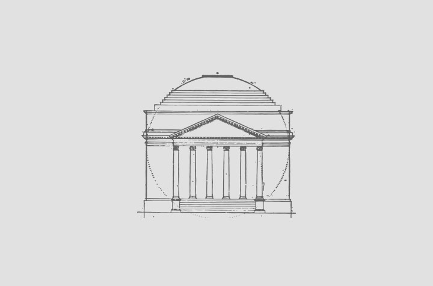

With Drupalcon fast approaching, we had an oh s**t moment and realized it was time to make our website. Here's how we made it happen in Drupal 8 with Angular.js. Along the way we got a good impression of Drupal 8 alpha 12, messed around with some fun ui chaos and had some fun. Here we go.